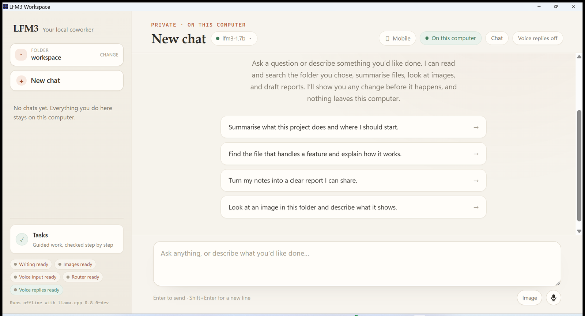
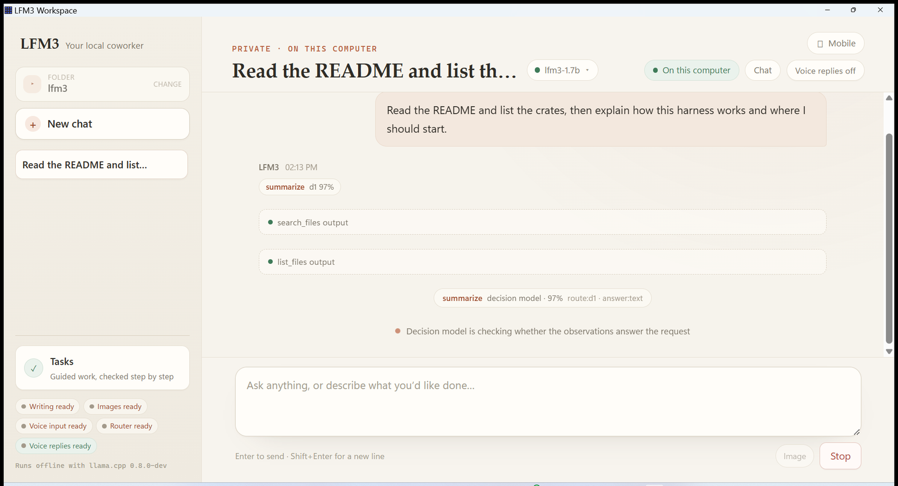

LFM3 Workspace is a free desktop assistant that reads the folder you choose, drafts reports and edits,
and asks before it writes anything. No account. No cloud. No telemetry out of the box.
Model files are not in the installer. Download them inside the app (~4.9 GB) and they stay on this machine.
Windows 10/11
Linux x64
CPU inference
MIT source
LFM3 Workspace on this computer

Offline
The full interface: one folder, one conversation, four local roles.
What it is
What is LFM3 Workspace?
LFM3 Workspace is a free, local-first AI coworker for Windows and Linux. You pick a
folder, describe what you need, and it reads the files it actually needs — then drafts the report, the
summary, or the edit. Every write appears as an exact diff and happens only after you allow it.
The work is done by Liquid AI's LFM3 models running through llama.cpp on your own CPU. Four small
servers share the job: one routes the request, one acts and writes, one looks at images, one hears and
speaks. They bind to 127.0.0.1 only. There is no account, no API key, and no telemetry out of the box.
Chat is for thinking out loud. When a result has to be machine-checked, the same engine runs a
verified task against a frozen acceptance contract — separate rules, separate evidence,
and no way for a chat message to satisfy a check.
In one sentence
LFM3 Workspace is a free desktop AI assistant that runs entirely on your computer, reads the folder you
choose, and asks for approval before it writes a file.
Capabilities
Everything the harness can do.
Voice in and out, four models on one task, image and audio understanding, a plan that has to prove itself,
and a decision that stays yours. Each of these runs on this machine.
Voice in
Voice chat — speak instead of type
Tap the microphone and talk. The clip is recorded in the app, resampled to 16 kHz mono WAV, and
transcribed here by LFM3-Audio-2B. The text lands in the composer for you to edit before you send it.
Voice out
It answers out loud
Speak reads any reply aloud, and the header Voice replies switch turns it
on for the whole conversation. llama-tts renders the audio with the same LFM3-Audio-2B weight
that listens; if that pair is incomplete, the offline Windows system voice takes over and the reply is
labelled system-sapi so you can tell which one spoke.
Hearing
It listens to recordings in the folder
transcribe opens a WAV, MP3, FLAC, OGG, or M4A and returns the verbatim text with the
measured duration, sample rate, and channel count — never a guess from the file size.
Vision
It looks at images
+img attaches a PNG, JPEG, WebP, or GIF into the workspace, and look reads it
through the local vision model. The answer comes back with measured facts: format, byte length, and
pixel dimensions.
Multimodel
Four models finish one task
d1-2B decides the shape of the request, LFM3-1.7B acts and writes, LFM3-VL-2B looks at images, and
LFM3-Audio-2B hears and speaks. The transcript shows the chosen route, its confidence, and which roles
actually ran for that turn.
Folder
It reads the folder you chose
list_files and read_file map and open the real files;
search_files matches names and text across the whole workspace;
related_files compares one file's distinctive terms against the rest. No shell tool,
and no path outside the folder.
Preflight
A second model checks the work before you see it
Before an approval card appears, d1 judges the proposed change against your own words and holds a
confident mismatch at a 75% floor. After read-only work, an evidence gate flags thin observations at
65% instead of letting the model guess. Either gate advises or vetoes — it can never authorize.
Approval
Every write stays your decision
A write or edit becomes a card with the exact diff and Allow once / Deny.
Pending cards expire after ten minutes, decisions are stored with the transcript, and a path that
escapes the folder or passes through a link is refused before it runs.
Agent loop
It plans, acts, and proves the result
The model keeps a live todo list with a check on every step and runs up to twelve tool rounds per turn;
Stop cancels the stream and any pending approval. finish is refused until the
required output really exists on disk — the report carries the measured byte length and a content digest
recomputed from the file it re-read, not a claim.
Verified
Verified tasks, when the result must be checked
The plan-first path freezes acceptance checks, has each step approved before it runs, and retries with a
different strategy until the checks pass, keeping a durable journal as evidence. A chat message can
never satisfy a mission check.
Models
You own the weights
The Models menu reports each role as Loaded, Installed, or Missing. A download starts only
when you click it, runs one role at a time with live progress and cancel, and is checked against the
published byte length and SHA-256 before it is used or hot-swapped into an idle chat.
Offline
Local by construction
All four servers bind to 127.0.0.1. No account, no API key. Under
LFM3_PROFILE=packaged the engine refuses to start with a non-loopback endpoint or with the
download flag on. With tracing left off, the only network traffic is a model download you start or a link
you open.
Sessions
Conversations survive restarts
Chat history, pending approvals, and jobs live in SQLite inside your data folder. Rename, delete, or
resume any session; a turn the app stopped mid-way comes back marked cancelled rather than being
replayed.
Capacity
32,000 tokens, on a CPU, on both desktops
The acting model is served with a 32,000-token window, so long sessions keep their history. The bundled
llama.cpp runtime is CPU-only — no GPU required or configured — and the same app ships for Windows 10/11
and Linux x86_64, with a headless lfm3 CLI for Linux.
The speech round trip (spoken answer recorded back through the local audio model) and the decision gates are
measured by the project's own multi-model benchmark against the pinned weights. The README publishes those
numbers with their caveats rather than rounding them up.
See it
The whole surface is the conversation.
Chat All four local roles detected, the bundled llama.cpp runtime ready, and the folder chip
acting as the boundary the tools cannot cross.

Mid-turn A real turn: file reads, the decision route, the evidence gate, and a working Stop
control. Nothing here leaves the machine.
How it works
Four small models. One local loop.
d1-2B
Route the request
A compact decision model classifies what you asked for and picks the roles that turn needs. Small
talk skips it. Routing can widen capability; it can never grant permission.
LFM3-1.7B
Act on it
The acting model plans in short steps, calls file tools, reads the real output, and writes the
deliverable. It is served with a 32,000-token window, so long sessions keep their history.
TOOLS
Touch only your folder
List, search, read, compare, write, edit. Every path is checked against the workspace you chose;
anything outside it is refused before it runs. Chat has no shell.
YOU
Approve the change
Reads and searches run immediately. A write or edit becomes a card with the exact diff and
Allow once / Deny. A denied change leaves the file untouched.
LFM3-1.7B text + agent
LFM3-VL-2B images
LFM3-Audio-2B speech in/out
d1-2B routing + checks
All model servers bind to 127.0.0.1. With tracing off (the default), the only network traffic is a
model download you start, or a link you open.
The installer is not code-signed, so Windows SmartScreen may ask you to choose
More info → Run anyway.
Linux x64 · Desktop
LFM3 Workspace for Linux
The full Tauri app: chat, file tools, approval cards, verified tasks, local vision, and local voice.
The .deb installs with apt; the .AppImage runs from any folder.
The CLI archive has no model downloader. Supply the same pinned GGUF files, then run
./run.sh doctor.
Model files are separate
Why the Windows installer is 15 MB, not 5 GB
The weights stay out of every package so the download stays small and you only fetch the roles you
want. Open Models after launch and click Download; every file is
pinned and checked against its published size and SHA-256.
Model files and sizes for each of the four local roles
Role
File
Size
Text + agent
LFM3-1.7B-Q4_K_M.gguf
1.10 GB
Vision
LFM3-VL-2B-QAD-Q4_0.gguf + mmproj
1.25 GB
Voice
LFM3-Audio-2B-Q4_K_M.gguf + mmproj
1.40 GB
Decision
d1-2B-Q4_K_M.gguf
1.10 GB
All four roles
≈ 4.9 GB
Where they go
%LOCALAPPDATA%\LFM3Harness\models
The Windows app creates one subfolder per repository and scans the folder for weights. If you copy
models in yourself, open the Models menu and choose Reload installed models. Set
LFM3_MODELS_DIR to use a different folder.
The Linux desktop app does the same under $XDG_DATA_HOME/LFM3Harness/models, or
~/.local/share/LFM3Harness/models when that variable is unset. The headless CLI keeps its
weights in models/ beside run.sh. Every package honours
LFM3_MODELS_DIR.
Install. Run the Windows setup, install the Linux .deb or run the
.AppImage, or unpack the headless CLI archive.
Download models. Open Models and fetch the roles you need.
Pick a folder. Ask for the work, then approve the diff.
Questions
Straight answers.
What is LFM3 Workspace?
A free desktop AI coworker that runs Liquid AI's LFM3 models entirely on your computer. Choose a
folder, ask for something, and it reads the files, drafts a report or edit, and shows the exact change
before writing.
Is it really offline?
Yes. Once the models are downloaded, chat, file tools, image understanding, and voice run on your CPU
through local llama.cpp servers bound to 127.0.0.1. No account, no cloud, no telemetry out of the
box. With tracing off, the app uses the network only when you start a model download or open a link.
Is it free?
Yes. The app and its source are free to download and use. The source is MIT-licensed; the model
weights follow Liquid AI's LFM Open License on each model card.
Do I need a GPU?
No. The bundled runtime is CPU-only. 8 GB of RAM is the practical minimum for chat with the text
model, and more helps when vision, voice, and routing run alongside it. A GPU would be faster, but none
is required or configured.
Why are the models downloaded separately?
All four roles total about 4.9 GB. Leaving the weights out keeps the Windows installer at roughly
15 MB and lets you install only what you need. Downloading inside the app verifies each file's byte
length and SHA-256 before it is used.
Where do the models go?
On Windows: %LOCALAPPDATA%\LFM3Harness\models. On the Linux desktop:
$XDG_DATA_HOME/LFM3Harness/models (or ~/.local/share/LFM3Harness/models).
Both use one subfolder per repository. Copy weights there yourself and choose
Reload installed models, or point LFM3_MODELS_DIR at another folder. The
Linux CLI archive uses models/ beside run.sh.
Does it have a Linux desktop app?
Yes. The full Tauri app builds for Linux x86_64 as a .deb and an .AppImage,
with the same chat, file tools, model downloader, and local vision and voice roles. Linux uses process
groups for its model servers instead of a Windows Job Object. The headless lfm3 CLI is a
separate archive. macOS is not supported.
What can it do to my files?
Its tools are confined to the folder you choose. Reads and searches run immediately; writes and edits
wait for Allow once on an exact diff. A denied change leaves the file untouched, and chat has
no shell tool.
Local by construction
Your files. Your machine. Your models.
Download it, add the models, and keep working when the network does not.